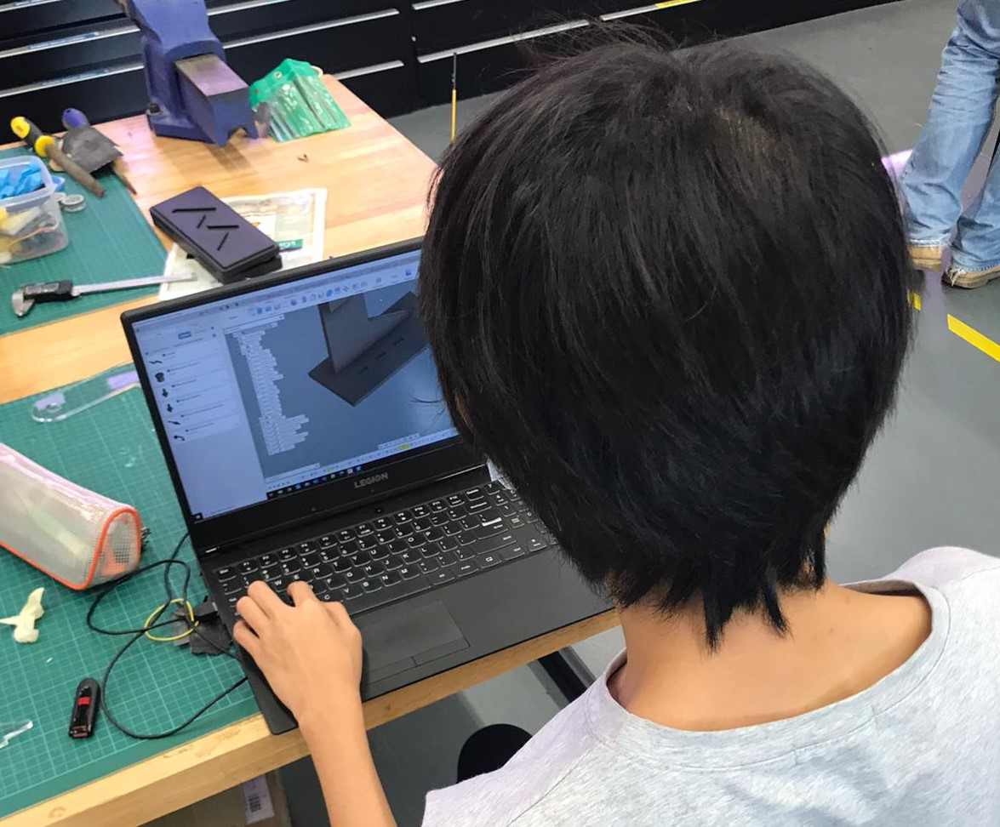
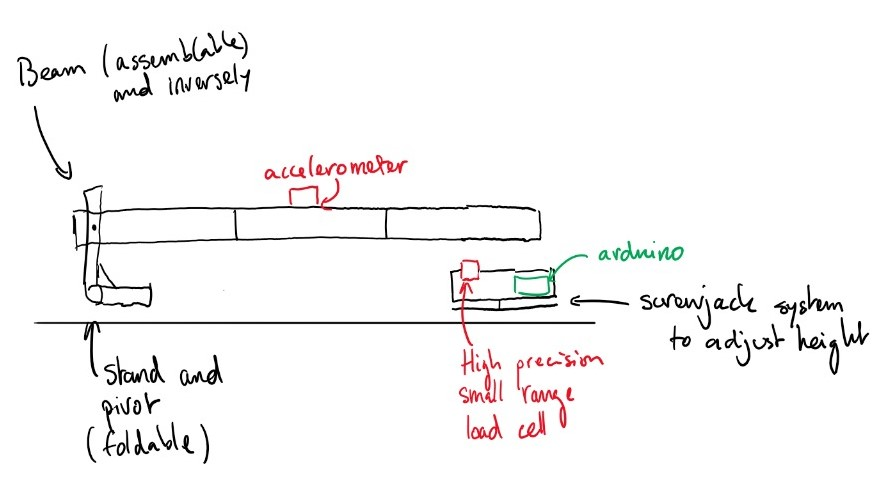
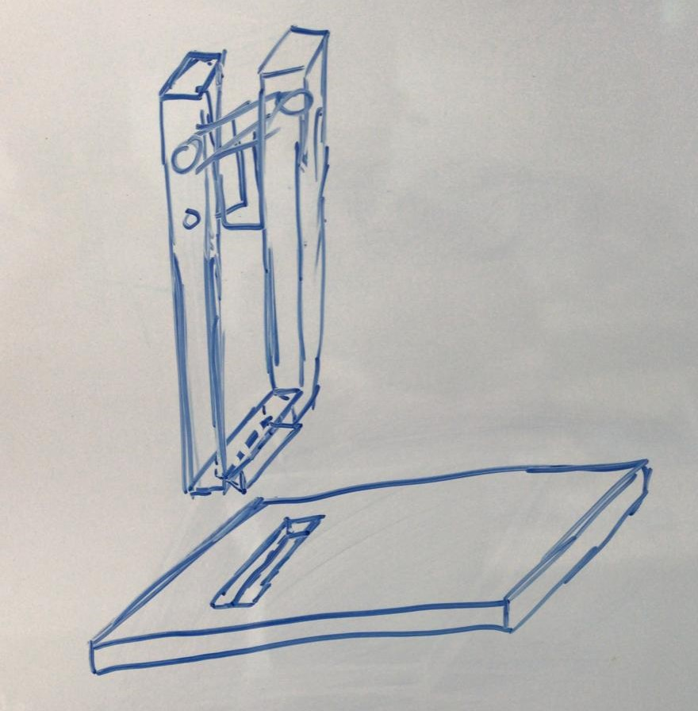
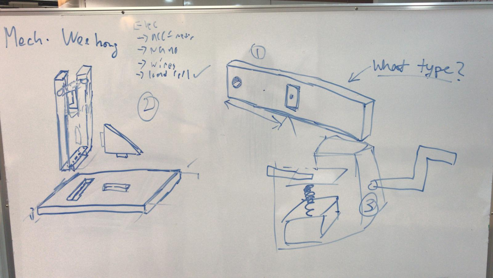
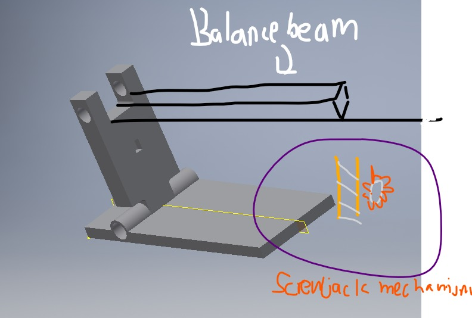
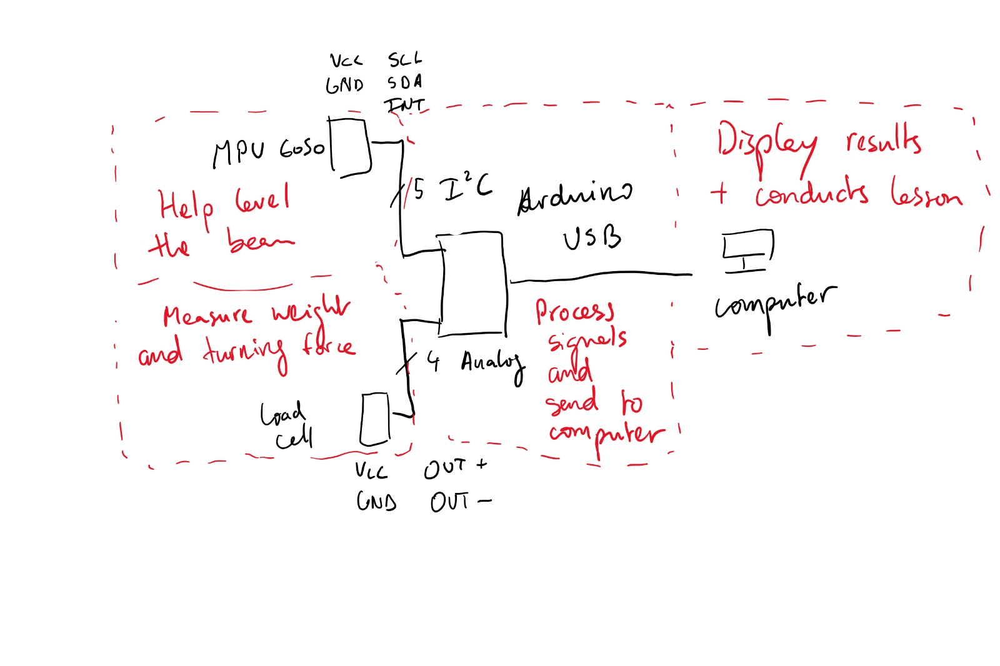
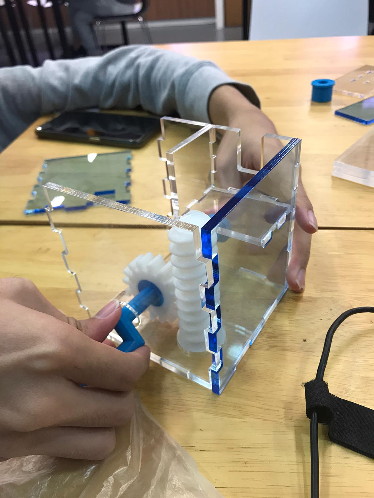
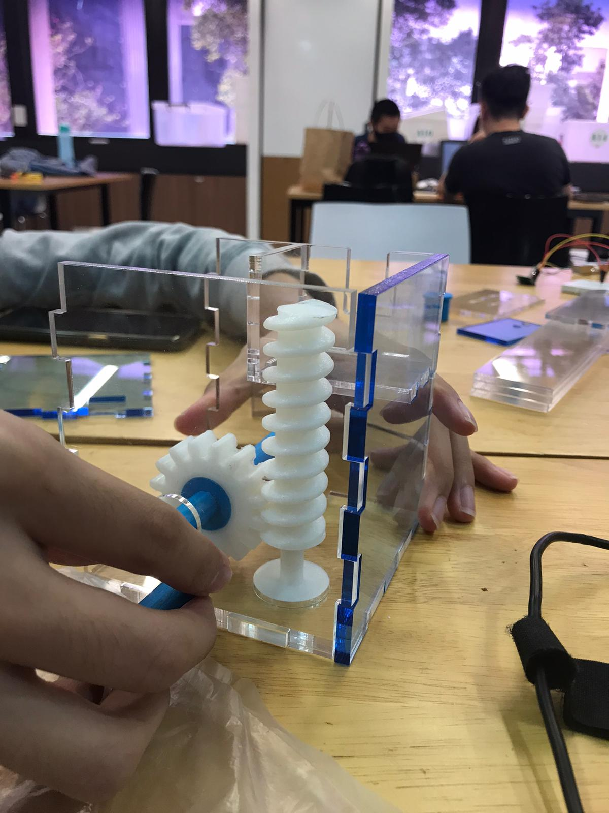
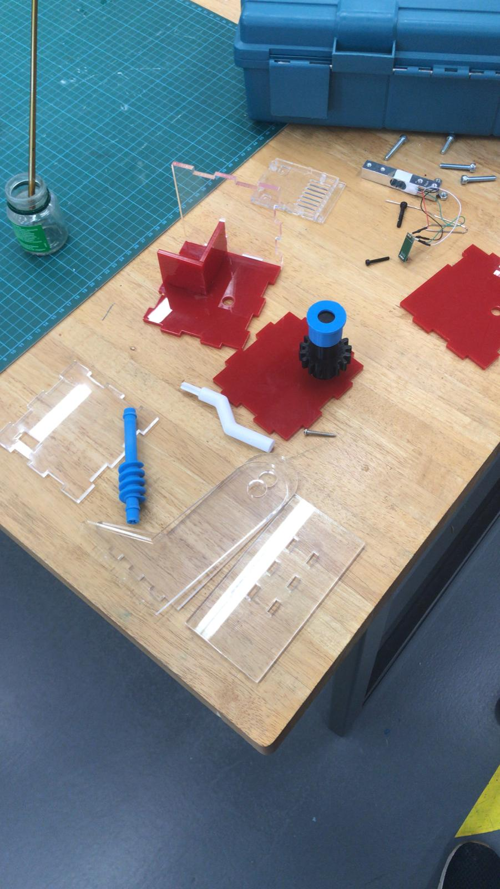
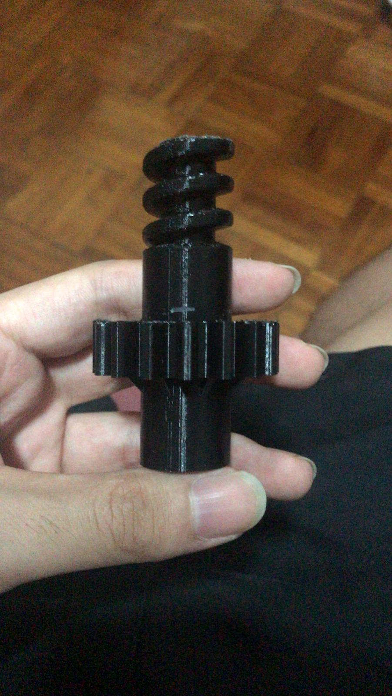

Behind the Scenes
We will describe the process of making our kit here, and some of the failures we encountered along the way.

Our kit making journey was not an obstacle-free journey. Starting from the decision of which experiment to transform into a kit, we had to first go through what does the experiment entails, and what is the apparatus used to carry the experiment. Once that was done, we had to see what could be improved from the traditional apparatus so as to make smarter and smaller for the users. Here are some of the early designs and sketches.





Wee Hong then proceeded to designing each parts of the beam in Fusion 360 so that we could laser cut and 3D print the parts. The laser cutting of the beam and support stand went fine, but the trouble came when we finished laser cutting the box. Firstly, the screwjack system was not working as intended because we designed the mechanism in the wrong direction. The wormwheel is supposed to drive the gear, not the the other way around. Here are some photos of the design and how it fails.
The failed design can be found here: https://a360.co/3jrGn23.

Before

After
Furthermore, the box designed was too small to house the Arduino Uno inside. Hence Wee Hong designed a bigger one to house both the Arduino and the new mechanism. In the meantime, Wei Zhang and Rakin were programming the Arduino, Wei Zhang implementing the experiment protocol in program, and Rakin interfacing with the sensors we had, including calibration. Here is the 2nd version of the box, followed by the code used.

#include <Wire.h>
#include "HX711.h"
const int MPU=0x68;
int16_t AcX,AcY,AcZ,Tmp,GyX,GyY,GyZ;
int minVal=265;
int maxVal=402;
//return variable
double x,y,z;
//Load variables
//#define calibration_factor ??
const int LOADCELL_DOUT_PIN = 3;
const int LOADCELL_SCK_PIN = 2;
const int calibration_factor = -465;
HX711 loadcell;
float L, F, dinv, gradient, Cweight, Aweight, PercentageError, err;
//float value, Cweight, Aweight, PercentageError;
String Ans;
int step=1, done=0;
void setup() {
//Instructions
Serial.begin(9600);
//Serial.println("MOMENTS LAB\n\nWelcome to your moments practical session!!!\nPlease follow the instructions step by step and have fun :)\n\n***TAKE NOTE: Whenever you are done with a step, press enter.\n\n\n");
Serial.println(F("MOMENTS LAB\n"));
Serial.println(F("Welcome to your moments practical session!!!"));
Serial.println(F("Please follow the instructions step by step and have fun :)\n"));
Serial.println(F("***TAKE NOTE: Whenever you are done with a step, press enter.\n"));
Serial.println(F("ANSWER EVERYTHING IN SI UNITS\n\n"));
//loadcell
loadcell.begin(LOADCELL_DOUT_PIN, LOADCELL_SCK_PIN);
loadcell.set_scale(calibration_factor);
loadcell.tare(); //assume no weight at start up
//accelerometer
Wire.begin();
Wire.beginTransmission(MPU);
Wire.write(0x6B);
Wire.write(0);
Wire.endTransmission(true);
Serial.begin(9600);
}
void loop() {
switch (step) {
case 1:
//Step 1
Serial.println(F("Step 1: Take out the beam & knife edge from the science kit provided\n"));
while (Serial.available() == 0);
Serial.read();
step++;
break;
case 2:
//Step 2
Serial.println(F("Step 2: Place the beam on the knife edge to find the Center of Gravity (CG) of the beam\n"));
while (Serial.available() == 0);
Serial.read();
step++;
break;
case 3:
//Step 3
Serial.println(F("Step 3: Find the length L, from the center of the hole on the beam to the CG of the beam"));
Serial.print("Length L = ");
while (Serial.available() == 0);
L = Serial.parseFloat(); //value = L
Serial.print(L, 3);
Serial.println(F(" m\n"));
Serial.read();
step++;
Serial.println(F("Using d = 0.28 m for your first set of readings"));
break;
case 4:
//Step 4
Serial.println(F("Step 4: Set up the apparatus shown on the website\n"));
while (Serial.available() == 0);
Serial.read();
step++;
break;
case 5:
//Step 5
Serial.println(F("Step 5: Ensure that the beam is horizontal"));
Serial.println(F("Turn the crank to move the screw jack up and down until the beam is horizontal"));
Serial.println(F("--> Once the beam is horizontal, you will be allowed to move on to the next step\n"));
checkHorizontal();
step++;
break;
case 6:
//Step 6
Serial.println(F("Step 6: Finding the value of Force F exerted on the loadcell"));
Serial.println(F("Ensure that the beam is resting on the load cell, and when you are ready for Force F to be generated, press 'ENTER'"));
while (Serial.available() == 0);
Serial.println(F("--> Please wait while the value of Force F is being generated\n"));
Serial.print(F("Force F = "));
Serial.print(loadcell.get_units()*0.00981, 10);
Serial.println(F(" N"));
Serial.read();
step++;
break;
case 7:
//Step 7
Serial.print(F("\nStep 7: Calculate and record down the value of 1/d\n1/d = "));
while (Serial.available() == 0);
dinv = Serial.parseFloat(); //value = 1/d
Serial.println(dinv, 5);
//Serial.print(dinv, 5);
//Serial.println(F("m^-1"));
Serial.read();
step++;
break;
case 8:
//Step 8
Serial.println(F("\nStep 8: Draw and record all your records for F, d & 1/d in a table"));
while (Serial.available() == 0);
Serial.read();
step++;
done++;
if (done == 5) {
step = 10;
}
break;
case 9:
//Step 9
Serial.println(F("\nStep 9: We will be repeating steps 4 to 8 until you have records for at least 5 different values of d"));
while (Serial.available() == 0);
Serial.read();
step = 4;
break;
case 10:
//Step 10
Serial.println(F("\nStep 10: Now with records of 5 different values of d, on a piece of graph paper, plot a graph of F (vertical axis) against 1/d (horizontal axis) and draw a line of best fit through your plotted points"));
while (Serial.available() == 0);
Serial.read();
step++;
break;
case 11:
//Step 11
Serial.print(F("\nStep 11: Determine the gradient of the graph\ngradient = "));
while (Serial.available() == 0);
gradient = Serial.parseFloat(); //value = gradient
Serial.println(gradient, 5);
Serial.read();
step++;
break;
case 12:
//Step 12
Serial.println(F("\nStep 12: Calculate the weight of the beam by using the formula 'weight = gradient/L'"));
Serial.print(F("Calculated weight = "));
while (Serial.available() == 0);
Cweight = Serial.parseFloat();
Serial.print(Cweight, 5);
Serial.println(F(" N"));
Serial.read();
step++;
break;
case 13:
//Step 13
Serial.println(F("\nStep 13: Weigh the beam on the load cell"));
Serial.println(F("Place the beam on the load cell, and when you are ready for the actual weight to be generated, press 'ENTER'"));
while (Serial.available() == 0);
Serial.println(F("--> Please wait while the value of the actual weight is being generated\n"));
Serial.print(F("Actual weight = "));
Serial.print(loadcell.get_units()*0.00981, 10);
Serial.println(F(" N"));
Serial.read();
PercentageError = ((Aweight - Cweight)/Aweight)*100; //Calculating actual percentage error
step++;
break;
case 14:
//Step 14
Serial.println(F("\nStep 14: Calculate the percentage error between the calculated and actual weight of the beam, using the formula ' [(Actual - Calculated)/Actual] x100% '"));
Serial.print(F("Percentage error = "));
while (Serial.available() == 0);
err = Serial.parseFloat(); //value = Typed in percentage error
Serial.print(err, 2);
Serial.println(F("%"));
Serial.read();
Serial.println(F("\nDoes the percentage error fall between the range of ± 5%? (YES/NO)"));
Serial.print(F("Ans: "));
while (Serial.available() == 0);
Ans = Serial.readString();
Serial.print(Ans);
Serial.read();
if (PercentageError <= 5 && PercentageError >= -5) {
Serial.println(F("\nGREAT JOB!!! You have completed the practical successfully!!! :)"));
while(1);
}
else {
Serial.println(F("\nOH NO!!! Something must have went wrong during the practical :("));
Serial.println(F("Please check back on the areas you might done wrongly (E.g. Calculations, Setting up of apparatus) and restart the practical from step 4.\n\n"));
step = 4;
}
break;
}
if (step>6 && step<10){
checkHorizontal();
}
}
void checkHorizontal(){
Serial.println(F("Checking if beam is horizontal"));
do {
Wire.beginTransmission(MPU);
Wire.write(0x3B);
Wire.endTransmission(false);
Wire.requestFrom(MPU,14,true);
AcX=Wire.read()<<8|Wire.read();
AcY=Wire.read()<<8|Wire.read();
AcZ=Wire.read()<<8|Wire.read();
int xAng = map(AcX,minVal,maxVal,-90,90);
int yAng = map(AcY,minVal,maxVal,-90,90);
int zAng = map(AcZ,minVal,maxVal,-90,90);
z= RAD_TO_DEG * (atan2(-yAng, -xAng)+PI);
Serial.println(F("Please ensure the the beam is horizontal"));
delay(500);
}while(z<358 && z>2);
Serial.println(F("The beam is now horizontal, you may move on to the next step\n"));
}
After Wee Hong had design the final mechanism and Wei Zhang has soldered the electronic parts, Nathan went to laser cut and 3D print the new parts. However, the mechanism's threading was a bit off and we had to reprint the part several times to finally have it work, which cost us quite some time since the part was quite complex. From that point, we learned for next time that parts should be separated in smaller chunks so that reprinting the portion that failed does not take too much time.

The rest is just assembly of the parts, and the final result you can find it in the apparatus page.
The final design files can be found here: https://a360.co/3j49SqN.